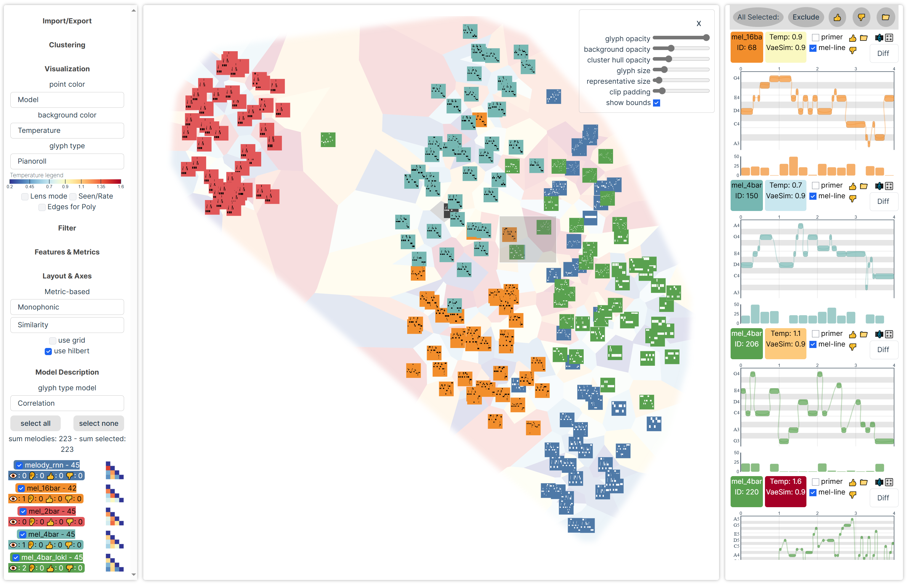

MAICO: A Visualization Design Study on AI-Assisted Music Composition

Authors. Simeon Rau, Frank Heyen, Benedikt Brachtel, Michael Sedlmair
Venue. TVCG (2025)
Abstract. We contribute a design study on using visual analytics for AI-assisted music composition. The main result is the interface MAICO (Music AI Co-creativity), which allows composers and other music creators to interactively generate, explore, select, edit, and compare samples from generative music models. MAICO is based on the idea of visual parameter space analysis and supports the simultaneous analysis of hundreds of short samples of symbolic music from multiple models, displaying them in different metric- and similarity-based layouts. We developed and evaluated MAICO together with a professional composer who actively used it for five months to create, among other things, a composition for the Biennale Arte 2024 in Venice, which was recorded by the Munich Symphonic Orchestra. We discuss our design choices and lessons learned from this endeavor to support Human-AI co-creativity with visual analytics.
Received the Graphics Replicability Stamp